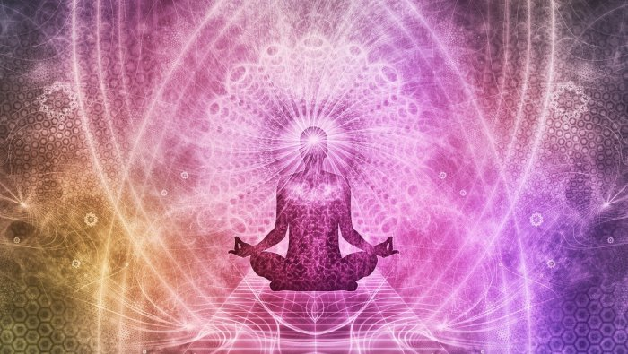

Visualization Meditation/Guided Imagery

This type of meditation aims to enhance feelings of peace, serenity, and relaxation by visualizing positive imagery, events, and outcomes or using affirmations to calm the mind. This meditation allows one to soothe the mind while the body is in a relaxed state. It can also be very effective in reducing stress long-term because it can help manifest visualizations of situations you want to be in or places you want to be in the future, and those manifestations themselves can relieve stress and give you direction. Visualization meditation is also key to achieving your goals and can help reduce the stress that comes with the fear of not achieving your goals.
-
Think about where you want to be, what your aspirations are, and when you are the happiest
-
Close your eyes, slow your breath, and visualize what you thought about. Imagine yourself in a position of success or a landscape of happiness. Visualize a place where you are calm and happy
-
Use all of your senses to better envision yourself in the image you put yourself in. What are you hearing, touching, or smelling? Are there any signature textures you are feeling or fragrances you are smelling? Are you blinded by a bright sky or pounded with aromatic scents?
-
Envision yourself moving forward through the vision and continue breathing as you do so, observing the scene you have created
-
With each second that passes, envision harmony and peace entering your body and stress, sadness, and solitude leaving it. If you are visualizing your goals and doubts are entering your mind, combat them with a mantra like “I can do this” or “Have strength.”
-
When you feel satisfied, leave the surroundings you have created for yourself and enter reality by opening your eyes. Think about what you envisioned and be sure to act on that.